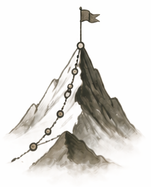

My Journey
Understand your growth. Deepen your clarity.

My Flow See your growth.Know your next step. My Reflections Your thoughts & ideas.
Reflect to grow.
Understand your growth. Deepen your clarity.

My Flow See your growth.